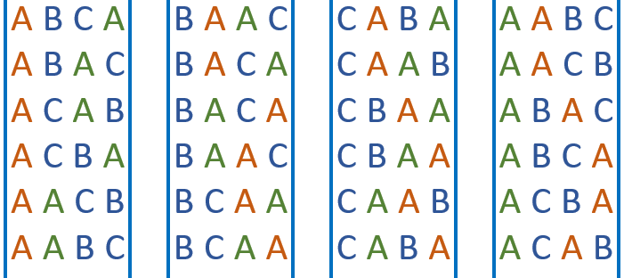

Lets say we have four letters (X, Y, B, and C), and lets say we have four boxes:
If I want to put these four letters into these boxes, how many can I arrange these letters?
In the first box, I can put either, X, Y, or C, so I have a total of 4 options:

After I have chosen a letter for the first box, then I have a total of 3 options for the second box. For example, if I choose C for the first box, then for the second box, I can choose, X, Y, or B:

In other words, if I have four letters, then there are [4 * 3] ways I can get the first two letters: XY, CX, BY, BX, XB, YX, and so on. Now, how many ways are there to choose the first three letters? You can probably guess that there [4 * 3 * 2] ways you can choose three letters from a group of four, this is because for each of the 12 ways you choose the first two letters, there would two ways you can choose the third letter.